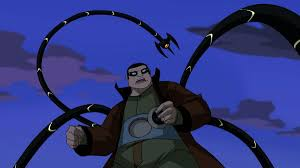

| Profile | Information | Powers&Abilities |
|---|---|---|
Venom (#1) |
Venom is a symbiote made by Peter Parker and Eddie Brock's parents. Originally intended to save cancer patients, the suit would be used for something far more sinister. |
|
| Green Goblin (#2) |
Norman Osborn is the CEO of Oscorp and is something of a scientist himself. After developing a formula and taking it himself, he gains an evil alter ego which takes over; the Green Goblin |
|
| Doctor Octopus (#3)  |
Otto Octavius was a former scientist working for Norman Osborn until an accident which fused the metal arms to his body, negatively altering his brain and turning him into a villain. |
|
| Electro (#4) |
Max Dillon is a former lab assistant who after having a vat of genetically altered electric eels fall on him, gains uncontrollable electric powers. Shunned by society, he turns to villainy. |
|
| Vulture (#5) |
The Vulture is a former scientist whose work was stolen and discredited by Norman Osborn, leading him to a path of villainy |
|